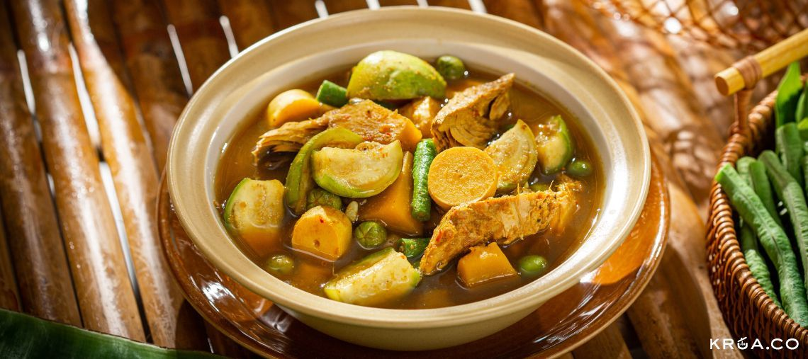
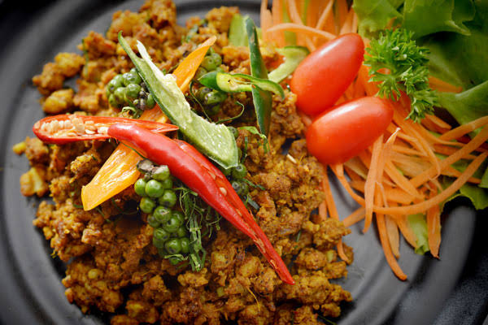
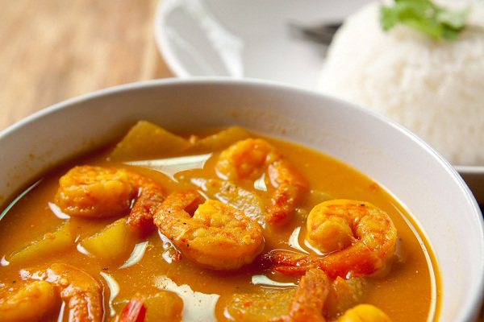

"อาหารภาคใต้"
"แกงไตปลา"
แกงไตปลาแห้ง (หรือไตปลาคั่วกลิ้ง)
เป็นการนำแกงไตปลามาผัดคั่วจนน้ำงวดแห้ง เนื้อปลาจะฟูและเข้มข้นมากๆ
นิยมทำเป็นน้ำพริกไว้คลุกข้าว หรือพกพาไปกินต่างถิ่นเพราะเก็บไว้ได้นาน
รสชาติเอกลักษณ์จะออกเค็มนำ เผ็ดร้อน จัดจ้าน และมีกลิ่นหอมของสมุนไพรกับไตปลาหมัก
เป็นเมนูที่กินกับข้าวสวยร้อนๆ หรือขนมจีนพร้อมผักเหนาะ (ผักสด) เยอะๆ แล้วฟินมาก

"คั่วกลิ้ง"
"คั่วกลิ้ง" ไปได้ยังไงครับ! นี่คือคู่หูคู่เดือดของอาหารใต้เลย รสชาติจะเผ็ดร้อน เค็มจัดจ้าน
และแห้งสนิท สมชื่อ "คั่วกลิ้ง" (คือคั่วในกระทะจนแห้งจนเนื้อกลิ้งไปมาได้)
เอกลักษณ์คือกลิ่นหอมแรงของพริกแกงใต้และใบมะกรูดซอย
เนื่องจากคั่วกลิ้งรสจัดและเผ็ดร้อนมาก เมนูนี้จึงต้องกินกับข้าวสวยร้อนๆ
และขาดไม่ได้คือ "ผักเหนาะ" (ผักสดแช่เย็นกรอบๆ) เช่น สะตอ แตงกวา
ถั่วฝักยาว ใบบัวบก หรือยอดมะม่วงหิมพานต์ เพื่อช่วยดับความเผ็ดร้อน

"แกงส้ม(แกงเหลือง)"
"แกงเหลือง" (หรือที่คนใต้แท้ๆ เขาเรียกว่า "แกงส้ม") เมนูนี้คือที่สุดของความซดน้ำแล้วตื่นเลย
รสชาติจะเปรี้ยวนำ เผ็ดร้อนตาม และเค็มกลมกล่อม สีเหลืองจัดจ้านจากขมิ้น
แตกต่างจากแกงส้มภาคกลางอย่างชัดเจน
พริกแกงเหลืองจะคล้ายพริกแกงส้มทั่วไป แต่จะใส่ "ขมิ้น"
ในปริมาณที่มากพอจนทำให้น้ำแกงเป็นสีเหลืองทอง และใส่ "กะปิใต้"
แท้ๆ ที่มีความหอม นัว ไม่เค็มโดด บางสูตรจะตำเนื้อปลาต้มสุกผสมลงไปในพริกแกงด้วยเพื่อให้น้ำแกงมีความข้น
